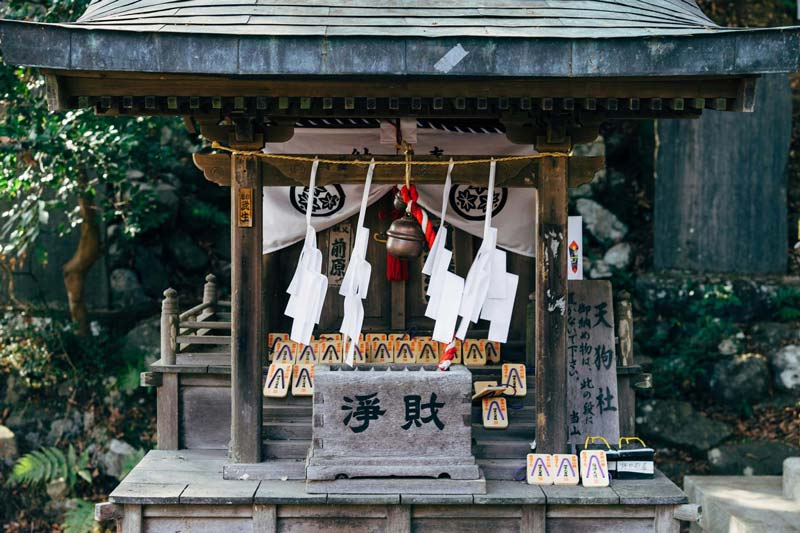

日本神社和佛寺是日本文化的精髓之一。 是供奉神明的場所，反映了日本人對自然和神靈的崇拜。 也是人們尋求心靈寄託和旅遊觀光的熱門目的地。
首頁/所有主題/古蹟建築
日本的神社、寺廟和庭園是日本文化的重要組成部分，體現了日本人對自然、
宗教和美學的追求。這些地方不僅是信仰和靈修的場所，也是休閒和欣賞美景
的場地。
傳統日式建築的一個最突出的特點是對木材的巧妙使用。依靠木材的榫卯結構
進行組裝，這種技術展示了卓越的工藝和對自然材料的敬畏。


Ttemples, Shrines
寺廟、神社
日本古蹟建築特色源於其獨特的文化背景與傳統工藝。
古建築融合自然景觀，尊重自然、簡約優雅，
體現出日本人對於美學與和諧的追求。
古代神社與寺廟體現了崇拜自然與宗教信仰，
以木造結構、屋瓦與庭園展現和諧。
歷史城堡彰顯戰國時代武士文化，擁有堅固的石牆與櫓樓。
宮殿與禪宗寺院精緻的屋檐與彩繪彰顯藝術風格。


神社：
宗教：神社是神道教的宗教場所，用於祭祀神明和舉行儀式。
結構：神社的特色包括鳥居、手水舍（洗手口）、神殿和神籬。
祭祀活動：人們會在神社參加祭典、祈求福祉和健康。

寺廟：
宗教：寺廟是佛教的宗教場所，用於供奉佛像和舉行佛事。
結構：寺廟的結構通常包括山門、佛殿、塔和禪堂等建築。
靈修活動：寺廟是靈修和冥想的場所，僧侶和信眾在這裡進行宗教活動和修行。
推薦行程
Recommendations

京都-品味優雅茶道之3日行
讓您深入了解茶道的藝術與禮儀，感受其中的優雅與精緻。並感受到京都的傳統文化和美學所帶來的深刻啟示。

島根-藝術與禪庭園4日旅
這趟旅程提供豐富的視覺和精神享受，讓您深入了解島根的文化和美學，是一次完美的文化與禪庭園之旅。

大阪-歌舞伎之美3日行
這趟旅程將讓您充分領略大阪的歌舞伎藝術與傳統表演，並品嚐到當地的特色美食，感受大阪的多元文化和豐富的藝術氛圍。

京都-品味優雅茶道之3日行
讓您深入了解茶道的藝術與禮儀，感受其中的優雅與精緻。並感受到京都的傳統文化和美學所帶來的深刻啟示。

東京-國技相撲體驗4日之旅
作為國技，相撲在日本文化中具有重要地位，這趟東京相撲鑒賞之旅將讓您親身體驗這項傳統運動的獨特魅力和歷史。

Japanese Garden
日式庭園
日本庭園是日本文化中的重要組成部分，
以其精緻的設計和與自然環境的和諧而聞名於世。
日式庭園體現了日本人對自然和諧、美學和禪意的追求。
這種庭園設計在日本文化和歷史中佔有重要地位，
並在世界範圍內受到廣泛的讚譽。

池泉庭園（池泉回遊式庭園）：
擁有池塘和小溪，供人們散步欣賞景色。
庭園內通常設有橋樑、島嶼和瀑布，模仿自然景觀。

枯山水庭園：
也稱為「禪庭」，以石頭、砂子和苔蘚為主要元素。
模仿山川景觀，常見於禪寺，供僧侶冥想和靈修。

茶庭（露地）：
通常與茶室相連，供茶道儀式使用。
包括前庭和內庭，設計簡潔，強調寧靜和自然。
推薦行程
Recommendations
京都-品味優雅茶道之3日行
讓您深入了解茶道的藝術與禮儀，感受其中的優雅與精緻。並感受到京都的傳統文化和美學所帶來的深刻啟示。
島根-藝術與禪庭園4日旅
這趟旅程提供豐富的視覺和精神享受，讓您深入了解島根的文化和美學，是一次完美的文化與禪庭園之旅。
大阪-歌舞伎之美3日行
這趟旅程將讓您充分領略大阪的歌舞伎藝術與傳統表演，並品嚐到當地的特色美食，感受大阪的多元文化和豐富的藝術氛圍。
京都-品味優雅茶道之3日行
讓您深入了解茶道的藝術與禮儀，感受其中的優雅與精緻。並感受到京都的傳統文化和美學所帶來的深刻啟示。
東京-國技相撲體驗4日之旅
作為國技，相撲在日本文化中具有重要地位，這趟東京相撲鑒賞之旅將讓您親身體驗這項傳統運動的獨特魅力和歷史。